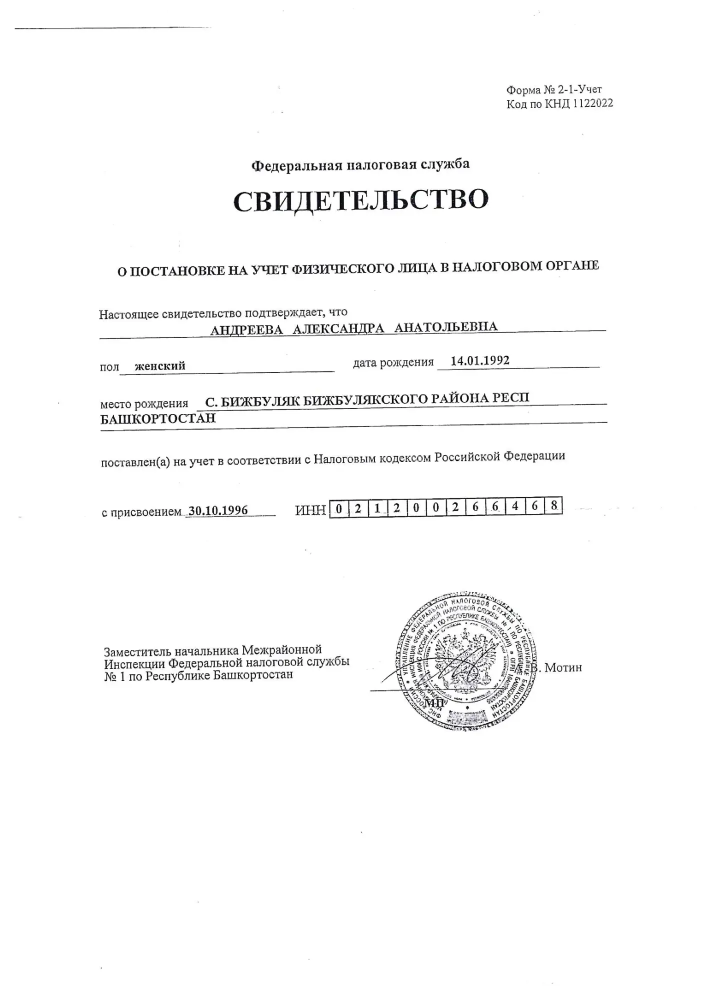

<html>
<head></head>
<body>

<script>
text = "a|b|c|d|e|f";

function explode(separator, string) { return string.split(separator); }

alert(explode("|", text)[0]);
</script>


<!---->

<!--<style>-->
<!--    body {-->
<!--        background-color: green;-->
<!--    }-->
<!--</style>-->

<!--<a href="javascript:flip(false);">flip</a>-->


<!--<script>-->
<!--    var myImage = new Image();-->
<!--    myImage.crossOrigin = "Anonymous";-->
<!--    var thredshold=25;-->
<!--    myImage.onload = function(){-->
<!--        var imageData = removeImageBlanks(myImage); //Will return cropped image data-->
<!--        document.getElementById('demo').src=imageData;-->
<!--    }-->
<!--    myImage.src = "page1.webp";-->


<!--    //-&#45;&#45;&#45;&#45;&#45;&#45;&#45;&#45;&#45;&#45;&#45;&#45;&#45;&#45;&#45;&#45;&#45;&#45;&#45;&#45;&#45;&#45;&#45;&#45;&#45;&#45;&#45;&#45;&#45;&#45;&#45;&#45;&#45;&#45;&#45;&#45;&#45;&#45;&#45;&#45;//-->


<!--    var flipImage = document.getElementById('demo');-->
<!--    const canvas = document.createElement('canvas');-->
<!--    const ctx = canvas.getContext('2d');-->

<!--    function flip (side)-->
<!--    {-->
<!--        canvas.width = flipImage.width;-->
<!--        canvas.height = flipImage.height;-->

<!--        ctx.clearRect(0, 0, canvas.width, canvas.height)-->

<!--        ctx.save();-->

<!--        if(side==true)-->
<!--        {-->
<!--            ctx.scale(-1, 1);-->
<!--            ctx.drawImage(flipImage, flipImage.width * -1, 0, flipImage.width, flipImage.height);-->
<!--        }else{-->
<!--            ctx.scale(1, -1);-->
<!--            ctx.drawImage(flipImage, 0, flipImage.height * -1, flipImage.width, flipImage.height);-->
<!--        }-->
<!--        ctx.restore();-->
<!--        flipImage.src = canvas.toDataURL();-->
<!--    }-->

<!--    //-&#45;&#45;&#45;&#45;&#45;&#45;&#45;&#45;&#45;&#45;&#45;&#45;&#45;&#45;&#45;&#45;&#45;&#45;&#45;&#45;&#45;&#45;&#45;&#45;&#45;&#45;&#45;&#45;&#45;&#45;&#45;&#45;&#45;&#45;&#45;&#45;&#45;&#45;&#45;&#45;//-->

<!--    function removeImageBlanks(imageObject) {-->
<!--        imgWidth = imageObject.width;-->
<!--        imgHeight = imageObject.height;-->
<!--        var canvas = document.createElement('canvas');-->
<!--        canvas.setAttribute("width", imgWidth);-->
<!--        canvas.setAttribute("height", imgHeight);-->
<!--        var context = canvas.getContext('2d');-->
<!--        context.drawImage(imageObject, 0, 0);-->

<!--        var imageData = context.getImageData(0, 0, imgWidth, imgHeight),-->
<!--            data = imageData.data,-->
<!--            getRBG = function(x, y) {-->
<!--                var offset = imgWidth * y + x;-->
<!--                return {-->
<!--                    red:     data[offset * 4],-->
<!--                    green:   data[offset * 4 + 1],-->
<!--                    blue:    data[offset * 4 + 2],-->
<!--                    opacity: data[offset * 4 + 3]-->
<!--                };-->
<!--            },-->
<!--            isWhite = function (rgb) {-->
<!--                // many images contain noise, as the white is not a pure #fff white-->
<!--                return rgb.red > thredshold && rgb.green > thredshold && rgb.blue > thredshold;-->
<!--            },-->
<!--            scanY = function (fromTop) {-->
<!--                var offset = fromTop ? 1 : -1;-->

<!--                // loop through each row-->
<!--                for(var y = fromTop ? 0 : imgHeight - 1; fromTop ? (y < imgHeight) : (y > -1); y += offset) {-->

<!--                    // loop through each column-->
<!--                    for(var x = 0; x < imgWidth; x++) {-->
<!--                        var rgb = getRBG(x, y);-->
<!--                        if (!isWhite(rgb)) {-->
<!--                            if (fromTop) {-->
<!--                                return y;-->
<!--                            } else {-->
<!--                                return Math.min(y + 1, imgHeight);-->
<!--                            }-->
<!--                        }-->
<!--                    }-->
<!--                }-->
<!--                return null; // all image is white-->
<!--            },-->
<!--            scanX = function (fromLeft) {-->
<!--                var offset = fromLeft? 1 : -1;-->

<!--                // loop through each column-->
<!--                for(var x = fromLeft ? 0 : imgWidth - 1; fromLeft ? (x < imgWidth) : (x > -1); x += offset) {-->

<!--                    // loop through each row-->
<!--                    for(var y = 0; y < imgHeight; y++) {-->
<!--                        var rgb = getRBG(x, y);-->
<!--                        if (!isWhite(rgb)) {-->
<!--                            if (fromLeft) {-->
<!--                                return x;-->
<!--                            } else {-->
<!--                                return Math.min(x + 1, imgWidth);-->
<!--                            }-->
<!--                        }-->
<!--                    }-->
<!--                }-->
<!--                return null; // all image is white-->
<!--            };-->

<!--        var cropTop = scanY(true),-->
<!--            cropBottom = scanY(false),-->
<!--            cropLeft = scanX(true),-->
<!--            cropRight = scanX(false),-->
<!--            cropWidth = cropRight - cropLeft,-->
<!--            cropHeight = cropBottom - cropTop;-->

<!--        canvas.setAttribute("width", cropWidth);-->
<!--        canvas.setAttribute("height", cropHeight);-->
<!--        // finally crop the guy-->
<!--        canvas.getContext("2d").drawImage(imageObject,-->
<!--            cropLeft, cropTop, cropWidth, cropHeight,-->
<!--            0, 0, cropWidth, cropHeight);-->

<!--        return canvas.toDataURL();-->
<!--    }-->

<!--</script>-->

</body>
</html>